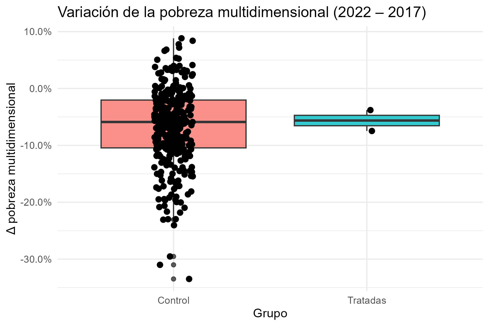
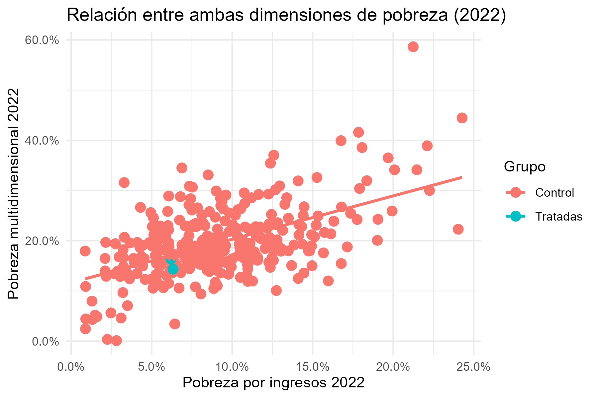

# A tibble: 6 × 8
nombre_comuna tratamiento pobreza_ingresos_2017 pobreza_ingresos_2022
<chr> <dbl> <dbl> <dbl>
1 Iquique 0 0.0438 0.0789
2 Alto Hospicio 0 0.0776 0.153
3 Pozo Almonte 0 0.109 0.153
4 Camiña 0 0.264 0.240
5 Colchane 0 0.139 0.223
6 Huara 0 0.188 0.181
# ℹ 4 more variables: pobreza_multidimensional_2017 <dbl>,
# pobreza_multidimensional_2022 <dbl>, delta_ing <dbl>, delta_multi <dbl>Impacto de áreas protegidas recientes en la pobreza comunal”
Introducción
Las áreas silvestres protegidas del Estado (ASP) cumplen un rol clave en la conservación de la biodiversidad de Chile. La creación de nuevos parques y reservas también puede generar efectos económicos y sociales a nivel local: por un lado, restringe actividades productivas; por otro, puede impulsar el turismo, atraer inversión pública y fortalecer programas sociales. Es importante tener en cuenta que las áreas protegidas se encuentran alejadas de urbes o zonas urbanas muy concurridas.
En este proyecto se analiza si la instauración del Parque Nacional Patagonia (D.S. Nº 98, 2018), que abarca las comunas de Chile Chico y Cochrane, coincide con cambios en los niveles de pobreza. Estas comunas conforman el grupo tratado, mientras que el grupo de control corresponde al resto de las comunas del país para las cuales existen datos disponibles entre 2017 y 2022.
Los indicadores analizados son:
- Pobreza por ingresos
- Pobreza multidimensional
El análisis es descriptivo y utiliza estimaciones simples de cambio y diferencia en diferencias (DiD).
Datos
Los datos provienen del Banco Integrado de Datos (BIDAT) del Ministerio de Desarrollo Social y Familia, que reporta estimaciones comunales para pobreza por ingresos y pobreza multidimensional.
El script R/01_eda.R:
- Lee el panel comunal desde
data/raw/pobreza_comunal_2017_2022.csv - Define la variable
tratamiento - Calcula los cambios entre 2017 y 2022 (
delta_ing,delta_multi) - Exporta el dataset procesado a
data/processed/datos_procesados.csv - Genera y guarda las figuras usadas en este informe
A continuación se muestra un vistazo de las variables utilizadas:
Hallazgo 1 – Evolución de la pobreza por ingresos

Las comunas tratadas muestran reducciones mínimas —o leves aumentos— en su pobreza por ingresos, mientras que las comunas de control exhiben descensos más claros. Esto sugiere que la creación del parque no se tradujo en una mejora monetaria inmediata. Sin embargo, este resultado no implica causalidad, dada la influencia de factores macroeconómicos y el tamaño reducido del grupo tratado.
Hallazgo 2 – Cambios en la pobreza multidimensional

Las comunas tratadas presentan descensos más pronunciados en la pobreza multidimensional. Esto indica mejoras en condiciones como vivienda, salud y educación, que pueden ser consistentes con inversiones públicas y sociales realizadas en la zona tras la creación del parque.
Hallazgo 3 – Relación entre pobreza por ingresos y multidimensional

La relación positiva entre ambas medidas indica que las comunas con mayor pobreza por ingresos suelen presentar mayores niveles de pobreza multidimensional. Las comunas tratadas se ubican en rangos intermedios, mostrando mejoras multidimensionales más rápidas que las monetarias.
Limitaciones del estudio
A pesar de los patrones observados, este análisis presenta algunas limitaciones que es importante considerar al interpretar los resultados:
Disponibilidad limitada de datos: solo existen estimaciones comunales comparables para 2017 y 2022, lo que impide evaluar tendencias previas o efectos de largo plazo asociados a la creación del Parque Nacional Patagonia.
Tamaño reducido del grupo tratado: las comunas tratadas son únicamente Chile Chico y Cochrane, lo que disminuye la potencia estadística y aumenta la sensibilidad del análisis frente a valores atípicos.
Factores externos no controlados: elementos como migración, shocks económicos, políticas sociales locales, inversión pública o los efectos de la pandemia podrían influir en los cambios observados en pobreza, sin que el análisis pueda aislarlos.
No permite establecer causalidad: el enfoque descriptivo y las diferencias simples no permiten atribuir causalidad. Para ello se requieren métodos adicionales, como modelos DiD formales, matching o paneles con mayor profundidad temporal.
Diferencias estructurales entre comunas: las comunas tratadas y de control pueden diferir en ruralidad, tamaño poblacional, estructura productiva o acceso a servicios, lo que podría generar sesgos en las comparaciones directas.
Conclusiones
- Las comunas donde se creó el Parque Nacional Patagonia no presentan reducciones claras en la pobreza por ingresos entre 2017 y 2022.
- Sí se observan mejoras importantes en pobreza multidimensional, lo que sugiere avances sociales en dimensiones no monetarias.
- Los patrones observados son consistentes con la idea de que los beneficios sociales pueden manifestarse antes que los monetarios.
Este análisis es descriptivo y no establece causalidad. Se recomienda complementar con series históricas más largas y métodos econométricos más robustos.
Reproducibilidad
- Ejecutar el análisis exploratorio:
source("R/01_eda.R")Bibliografía
- Ministerio de Desarrollo Social y Familia (MIDESO). Banco Integrado de Datos (BIDAT). Indicadores comunales de pobreza.
- CASEN – Encuesta de Caracterización Socioeconómica Nacional. Ministerio de Desarrollo Social y Familia.
- Sistema Nacional de Áreas Silvestres Protegidas del Estado (SNASPE). Información oficial de parques y reservas. Ministerio del Medio Ambiente / CONAF.